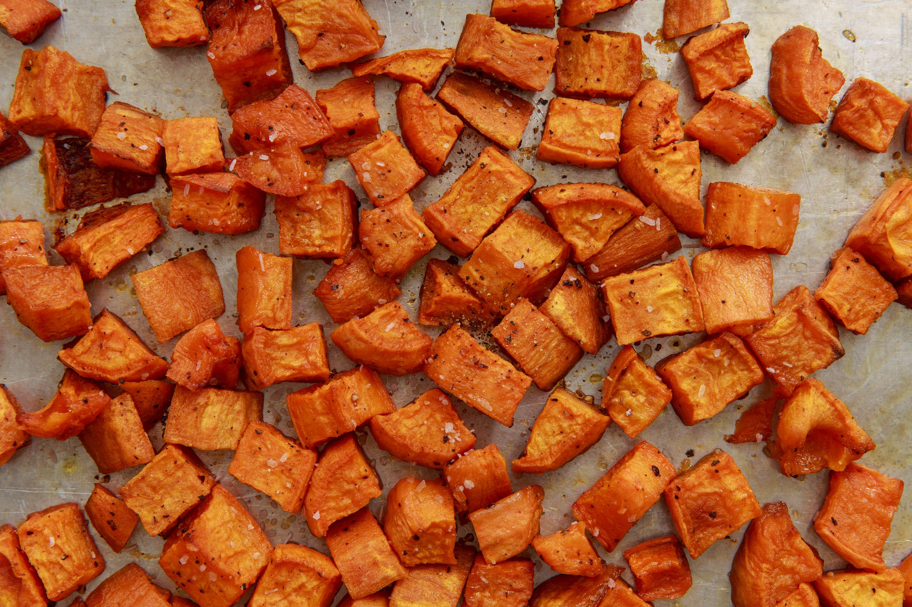

Ovenroast sweet potatoes and mushrooms

A hearty dish for those cold months!
This dish is perfect for those times when you want something healthy but filling
You can tweak this dish very easily to your preferences and what you have on hand.
Ingredients
- 2 medium sweet potatoes
- Cup of mushrooms(best if fresh and handpicked, if you are a filthy urbanite just buy organic)
- Rapeseef oil/butter/oliver oil
- Soy sauce
- MSG
- Garlic
- Ginger
- Vinegar
Putting it all together
- Preheat oven to 180°C
- Dice potatoes and mushrooms into bite sized chunks
- While the oven is heating up, mix the sauce
- Combine, 3 tbsp soy sauce, 1 tbsp vinegar, pinch of msg and two tablespoons of olive oil with a clove of crushed garlic and finely chopped ginger
- Toss the sweet potato and mushrooms together with the sauce
- When the oven is ready just toss it!
- After 20 minutes take it out and bone apple tea!
Now put it all on a tray and serve....nice
 Retvrn to main page
Retvrn to main page